Prerequisite – How ARP works, Packet flow in the same network
To deliver the packet to destination host, the source IP, destination IP, source MAC address and destination MAC address should be known. Some basic rules for the packet flow:
- If the destination host is present in the same network,then the packet is delivered directly to destination host.
- If the destination host is present in different network then the packet is delivered to the default gateway first which in turn delivers the packet to the destination host.
- If ARP is not resolved then ARP will be resolved first.
- MAC address never crosses its broadcast domain.
Explanation –
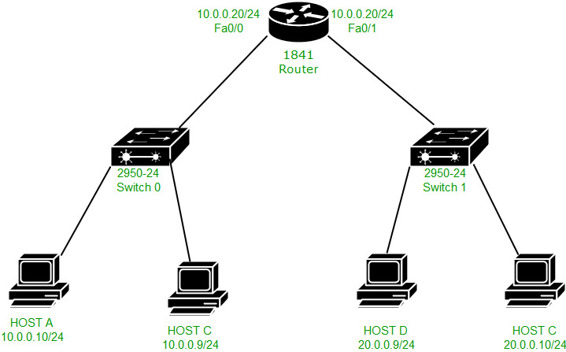
Here is a topology, in which there is host A (IP address – 10.0.0.10 and MAC address – 000D.BD22.7C22), host C (IP address – 10.0.0.9), host B (IP address – 20.0.0.10), host C (IP address-20.0.0.9 and MAC address – 00E0.A3E2.03DC) and the router (IP address – 10.0.0.20 and MAC address – 000B.BE8E.5201 on fa0/0,IP address – 20.0.0.20 and MAC address – 000B.BE8E.5202 on fa0/1 ).
Now we will try to ping from host A (IP address – 10.0.0.10) to host B (IP address – 20.0.0.10). First, AND operation is performed by source host between source IP address, source subnet mask and destination IP address, source subnet mask to know if the destination is present in same or different network.
If the result is same then the destination is in same network otherwise in different network. Here, the destination is present in different network therefore the result will be different and the packet will be delivered to default gateway.
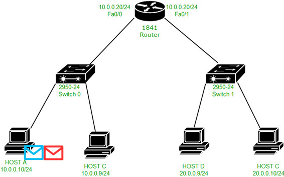
We see that 2 messages are generated ICMP(purple) and ARP(green). ARP has been generated because ARP has not been resolved.
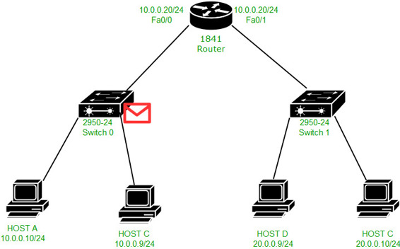
Now as the ARP should be resolved first, therefore the ARP request will be broadcast which is received by switch:
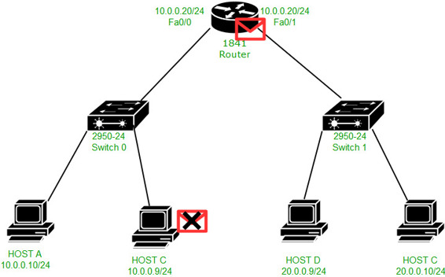
The switch in turn broadcast the ARP request to the host and the router. The PC discards the request and the router accepts it.

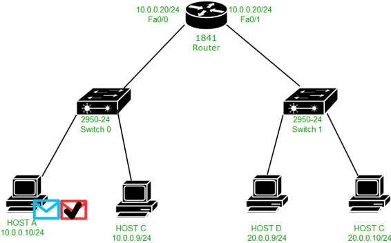
Now the ARP reply is unicast to the host A by the router as shown in the above figure.
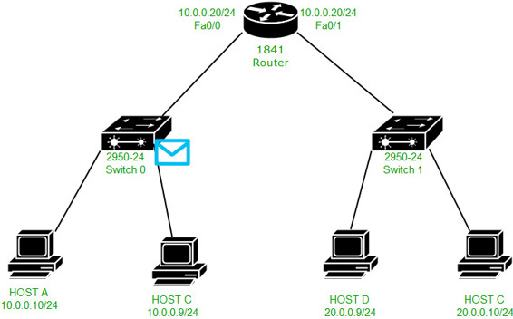
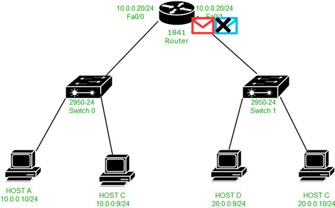
Now the ICMP packet will be unicast to the default gateway (IP address – 10.0.0.20 and MAC address – 000B.BE8E.5201) as shown in the above figures.
Note – The ICMP packet will be unicast to the default gateway as the ARP has been resolved now.
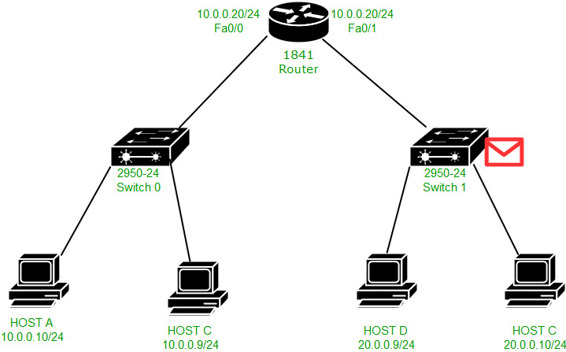
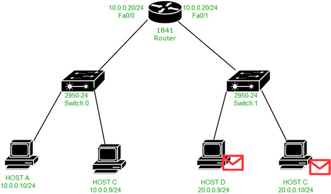
Now the ARP has to be resolved again because the router has to deliver the packet to host B and the ARP table has no entry for host B. Therefore,the ARP request is broadcast in the network 20.0.0.0/24. The packet is received by the Switch which in turn broadcast the request to host B and D. Host D will reject the request and the host B will accept it and generates an ARP reply for the MAC address 000B.BE8E.5202 (router fa0/1 MAC address) because the ARP reply has to be given to that MAC address from which ARP request has been recieved.
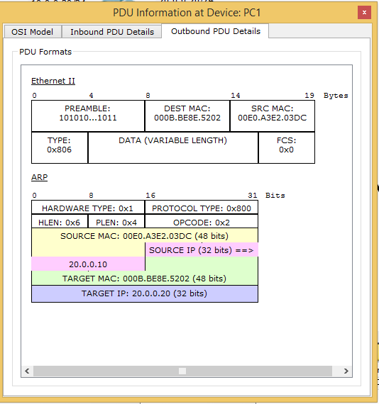
As you can see in the figure, the ARP reply packet is unicast to the router’s interface fa0/1 MAC address(000B.BE8E.5202) and the source MAC is 00E0.A3E2.03DC.
Note – Here, the target MAC address is the MAC address of host B (000B.BE8E.5202). Target MAC address is the MAC address of a device which the host wants to know through its ARP request to resolve ARP.
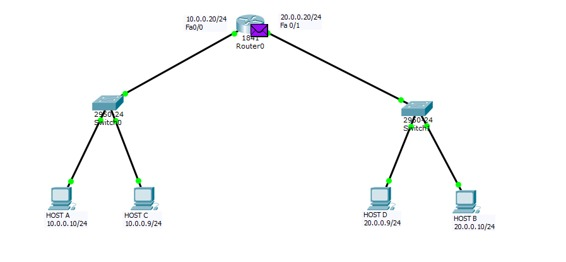
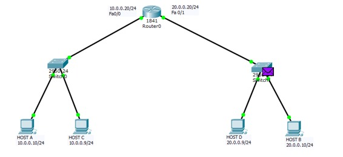
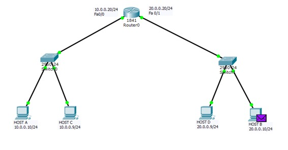
Now the ICMP echo request packet will be unicast to the host B as shown in the above 3 figures.
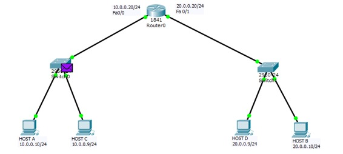
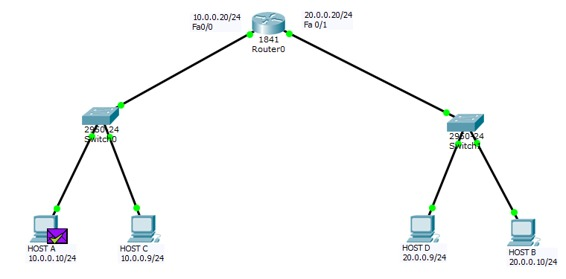
Host B will generate an ICMP echo reply in response to the ICMP echo request for the host A which will be delivered to the 20.0.0.20 (router’s interface IP address) first and then unicast to host A.
How the MAC address never crosses its broadcast domain?
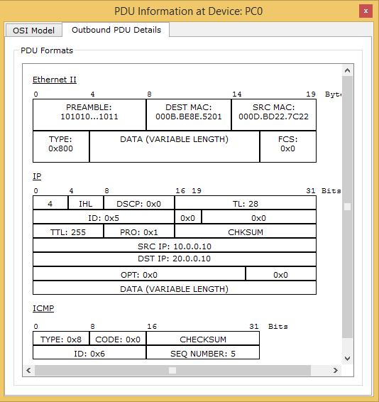
This is the IP and Ethernet header when host A forwards the ICMP echo request to its default gateway .Therefore source IP is 10.0.0.10 and destination IP is 10.0.0.20, source MAC address is 000D.BD22.7C22 (host A MAC address) and destination MAC address is 000B.BE8E.5201 (router’s fa0/0 interface MAC address).
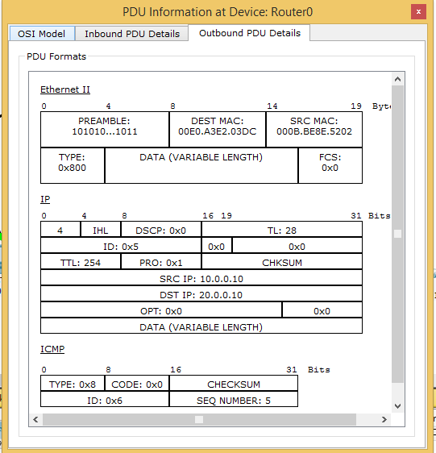
But now when the ICMP echo request message is to forwarded from router’s fa0/1 interface to host B then the source MAC address is changed to 000B.BE8E.5202 (router’s fa0/1 interface MAC address) and destination MAC address is 00E0.A3E2.03DC (host B MAC address).
Here router’s fa0/0 interface MAC address is not used as the souce MAC address,instead fa0/1 MAC address is used as a MAC address. Therefore, fa0/0 is not used in other broadcast domain (20.0.0.0/24 network) therefore MAC address never crosses its broadcast domain. IN this way, PING is performed in 2 different networks.